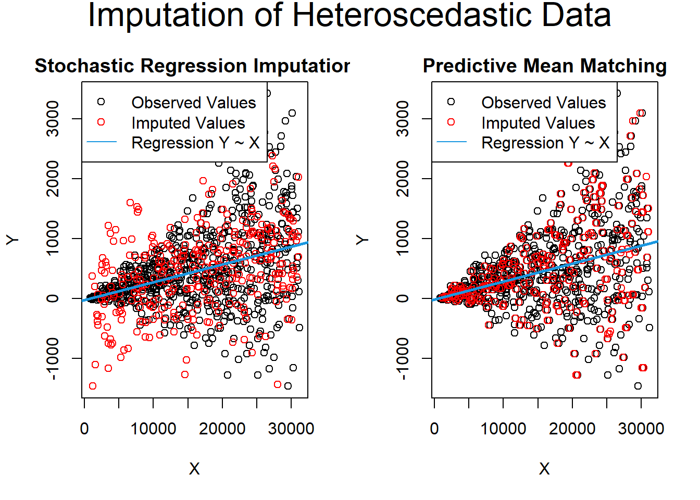

13.9 Application of Imputation in R
This section demonstrates how to visualize missing data and handle it using different imputation techniques.
| Package | Algorithm | Cont Var | Cate Var | Diagnostics | Complexity Handling | Best Use Case | Limitations |
|---|---|---|---|---|---|---|---|
| missForest | Random Forest | Yes | Yes | Out-of-bag error (NRMSE, PFC) | Handles complex interactions | Mixed data types with complex interactions | May overfit with small datasets |
| Hmisc | Additive Regression, Bootstrap, Predictive Mean Matching | Yes | Yes | \(R^2\) for imputed values | Basic to intermediate complexity | Simple datasets with low complexity | Limited to simple imputation methods |
| mi | Bayesian Regression | Yes | Yes | Graphical diagnostics,convergence | Detects issues like collinearity | Datasets with irregularities | Computationally intensive for large data |
| MICE | Multivariate Imputation via Chained Equations | Yes | Yes | Density plots, pooling of results | Handles variable interactions | General-purpose imputation for MAR data | Requires proper method selection for variable types |
| Amelia | Bootstrap-based Expectation Maximization (EMB) | Yes | Limited (requires normality) | Diagnostics supported | Works well with large/time-series data | Time-series or datasets approximating MVN | Assumes MVN, requires transformations for non-MVN |
13.9.1 Visualizing Missing Data
Visualizing missing data is an essential first step in understanding the patterns and extent of missingness in your dataset.


# Scatter plot of missing data with faceting
ggplot(airquality, aes(x, y)) +
geom_miss_point() +
facet_wrap(~ group)
# Missing values by variable
gg_miss_var(data, facet = group)
# Missingness in relation to factors
gg_miss_fct(x = variable1, fct = variable2)For more details, read The Missing Book by Nicholas Tierney & Allison Horst.
13.9.2 How Many Imputations?
Usually, 5 imputations are sufficient unless there is an extremely high proportion of missing data. High proportions require revisiting data collection processes.
Rubin’s Rule for Relative Efficiency
According to Rubin, the relative efficiency of an estimate based on \(m\) imputations (relative to infinite imputations) is given by:
\[ \text{Relative Efficiency} = ( 1 + \frac{\lambda}{m})^{-1} \]
where \(\lambda\) is the rate of missing data.
For example, with 50% missing data (\(\lambda = 0.5\)), the standard deviation of an estimate based on 5 imputations is only about 5% wider than that from infinite imputations:
\[ \sqrt{1 + \frac{0.5}{5}} = 1.049 \]
13.9.4 Imputation with Mean, Median, and Mode
Mean, median, or mode imputation is a simple yet commonly used technique.
# Imputation for the entire dataset
e1071::impute(iris.mis, what = "mean") # Replace with mean
e1071::impute(iris.mis, what = "median") # Replace with median
# Imputation by variable
Hmisc::impute(iris.mis$Sepal.Length, mean) # Replace with mean
Hmisc::impute(iris.mis$Sepal.Length, median) # Replace with median
Hmisc::impute(iris.mis$Sepal.Length, 0) # Replace with a specific valueChecking Accuracy
Accuracy can be checked by comparing predictions with actual values.
# Example data
actuals <- iris$Sepal.Width[is.na(iris.mis$Sepal.Width)]
predicteds <- rep(mean(iris$Sepal.Width, na.rm = TRUE), length(actuals))
# Using MLmetrics package
library(MLmetrics)
MAE(predicteds, actuals)
#> [1] 0.2870303
MSE(predicteds, actuals)
#> [1] 0.1301598
RMSE(predicteds, actuals)
#> [1] 0.360776713.9.5 K-Nearest Neighbors (KNN) Imputation
KNN is a more sophisticated method, leveraging similar observations to fill in missing values.
library(DMwR2)
knnOutput <- knnImputation(data = iris.mis.cat, meth = "median")
anyNA(knnOutput) # Check for remaining missing values
#> [1] FALSEactuals <- iris$Sepal.Width[is.na(iris.mis$Sepal.Width)]
predicteds <- knnOutput[is.na(iris.mis$Sepal.Width), "Sepal.Width"]
# Using MLmetrics package
library(MLmetrics)
MAE(predicteds, actuals)
#> [1] 0.2318182
MSE(predicteds, actuals)
#> [1] 0.1038636
RMSE(predicteds, actuals)
#> [1] 0.3222788KNN typically improves upon mean or median imputation in terms of predictive accuracy.
13.9.6 Imputation with Decision Trees (rpart)
Decision trees, such as those implemented in rpart, are effective for both numeric and categorical variables.
library(rpart)
# Imputation for a categorical variable
class_mod <- rpart(
Species ~ . - Sepal.Length,
data = iris.mis.cat[!is.na(iris.mis.cat$Species), ],
method = "class",
na.action = na.omit
)
# Imputation for a numeric variable
anova_mod <- rpart(
Sepal.Width ~ . - Sepal.Length,
data = iris.mis[!is.na(iris.mis$Sepal.Width), ],
method = "anova",
na.action = na.omit
)
# Predictions
species_pred <- predict(class_mod, iris.mis.cat[is.na(iris.mis.cat$Species), ])
width_pred <- predict(anova_mod, iris.mis[is.na(iris.mis$Sepal.Width), ])13.9.7 MICE (Multivariate Imputation via Chained Equations)
MICE assumes that the data are Missing at Random (MAR). It imputes data for each variable by specifying an imputation model tailored to the variable type.
13.9.7.1 How MICE Works
For a dataset with variables \(X_1, X_2, \dots, X_k\):
If \(X_1\) has missing data, it is regressed on the other variables.
This process is repeated for all variables with missing data, using the previously predicted values as needed.
By default:
Continuous variables use linear regression.
Categorical variables use logistic regression.
13.9.7.2 Methods Available in MICE
pmm(Predictive Mean Matching): For numeric variables.logreg(Logistic Regression): For binary variables (2 levels).polyreg(Bayesian polytomous regression): For factor variables (≥2 levels).- Proportional Odds Model: For ordered factor variables (≥2 levels).

#> Sepal.Width Sepal.Length Petal.Length Petal.Width
#> 100 1 1 1 1 0
#> 15 1 1 1 0 1
#> 8 1 1 0 1 1
#> 2 1 1 0 0 2
#> 11 1 0 1 1 1
#> 1 1 0 1 0 2
#> 1 1 0 0 1 2
#> 1 1 0 0 0 3
#> 7 0 1 1 1 1
#> 3 0 1 0 1 2
#> 1 0 0 1 1 2
#> 11 15 15 19 60
# Plot missing values
aggr(
iris.mis,
col = c('navyblue', 'yellow'),
numbers = TRUE,
sortVars = TRUE,
labels = names(iris.mis),
cex.axis = 0.7,
gap = 3,
ylab = c("Missing data", "Pattern")
)
#>
#> Variables sorted by number of missings:
#> Variable Count
#> Petal.Width 0.12666667
#> Sepal.Length 0.10000000
#> Petal.Length 0.10000000
#> Sepal.Width 0.07333333Imputing Data
# Perform multiple imputation using MICE
imputed_Data <- mice(
iris.mis,
m = 5, # Number of imputed datasets
maxit = 10, # Number of iterations
method = 'pmm', # Imputation method
seed = 500 # Random seed for reproducibility
)Evaluating Imputed Data
# Summary of imputed data
summary(imputed_Data)
#> Class: mids
#> Number of multiple imputations: 5
#> Imputation methods:
#> Sepal.Length Sepal.Width Petal.Length Petal.Width
#> "pmm" "pmm" "pmm" "pmm"
#> PredictorMatrix:
#> Sepal.Length Sepal.Width Petal.Length Petal.Width
#> Sepal.Length 0 1 1 1
#> Sepal.Width 1 0 1 1
#> Petal.Length 1 1 0 1
#> Petal.Width 1 1 1 0
# Density plot: compare imputed values (red) with observed values (blue)
densityplot(imputed_Data)
Accessing and Using Imputed Data
# Access the complete datasets
completeData1 <- complete(imputed_Data, 1) # First imputed dataset
completeData2 <- complete(imputed_Data, 2) # Second imputed datasetRegression Model with Imputed Dataset
# Fit a regression model using imputed datasets
fit <- with(data = imputed_Data, exp = lm(Sepal.Width ~ Sepal.Length + Petal.Width))
# Combine results of all 5 models
combine <- pool(fit)
summary(combine)
#> term estimate std.error statistic df p.value
#> 1 (Intercept) 1.9054698 0.33454626 5.695684 105.12438 1.127064e-07
#> 2 Sepal.Length 0.2936285 0.07011405 4.187870 88.69066 6.625536e-05
#> 3 Petal.Width -0.4742921 0.08138313 -5.827892 46.94941 4.915270e-0713.9.8 Amelia
Amelia uses a bootstrap-based Expectation-Maximization with Bootstrapping (EMB) algorithm for imputation, making it faster and suitable for cross-sectional and time-series data.
13.9.8.1 Assumptions
All variables must follow a Multivariate Normal Distribution (MVN). Transformations may be required for non-normal data.
Data must be Missing at Random (MAR).
13.9.8.2 Comparison: Amelia vs. MICE
MICE imputes on a variable-by-variable basis using separate models.
Amelia uses a joint modeling approach based on MVN.
MICE handles multiple data types, while Amelia requires variables to approximate normality.
13.9.8.3 Imputation with Amelia
library(Amelia)
data("iris")
# Seed 10% missing values
set.seed(123)
iris.mis <- prodNA(iris, noNA = 0.1)
# Specify columns and run Amelia
amelia_fit <- amelia(
iris.mis,
m = 5, # Number of imputations
parallel = "multicore", # Use multicore processing
noms = "Species" # Nominal variables
)
#> -- Imputation 1 --
#>
#> 1 2 3 4 5 6 7
#>
#> -- Imputation 2 --
#>
#> 1 2 3 4 5
#>
#> -- Imputation 3 --
#>
#> 1 2 3 4 5
#>
#> -- Imputation 4 --
#>
#> 1 2 3 4 5 6
#>
#> -- Imputation 5 --
#>
#> 1 2 3 4 5 6 7 8 9 10
# Access imputed outputs
# amelia_fit$imputations[[1]]Amelia’s workflow includes bootstrapping multiple imputations to generate robust estimates of means and variances. This process ensures flexibility and speed for large datasets.
13.9.9 missForest
The missForest package provides a robust non-parametric imputation method using the Random Forest algorithm. It is versatile, handling both continuous and categorical variables without requiring assumptions about the underlying functional forms.
Key Features of missForest
- Non-Parametric: No assumptions about the functional form.
- Variable-Specific Models: Builds a random forest model for each variable to impute missing values.
- Error Estimates: Provides out-of-bag (OOB) imputation error estimates.
- NRMSE (Normalized Root Mean Squared Error) for continuous variables.
- PFC (Proportion of Falsely Classified) for categorical variables.
- High Control: Offers customizable parameters like
mtryandntree.
13.9.10 Hmisc
The Hmisc package provides a suite of tools for imputing missing data, offering both simple methods (like mean or median imputation) and more advanced approaches like aregImpute.
Features of Hmisc
impute(): Simple imputation using user-defined methods like mean, median, or a random value.aregImpute():Combines additive regression, bootstrapping, and predictive mean matching.
Handles continuous and categorical variables.
Automatically recognizes variable types and applies appropriate methods.
Assumptions
Linearity in the variables being predicted.
Fisher’s optimum scoring is used for categorical variable prediction.
library(Hmisc)
# Impute using mean
iris.mis$imputed_SepalLength <- with(iris.mis, impute(Sepal.Length, mean))
# Impute using random value
iris.mis$imputed_SepalLength2 <- with(iris.mis, impute(Sepal.Length, 'random'))
# Advanced imputation using aregImpute
impute_arg <- aregImpute(
~ Sepal.Length + Sepal.Width + Petal.Length + Petal.Width + Species,
data = iris.mis,
n.impute = 5
)
#> Iteration 1
Iteration 2
Iteration 3
Iteration 4
Iteration 5
Iteration 6
Iteration 7
Iteration 8
# Check R-squared values for predicted missing values
impute_arg
#>
#> Multiple Imputation using Bootstrap and PMM
#>
#> aregImpute(formula = ~Sepal.Length + Sepal.Width + Petal.Length +
#> Petal.Width + Species, data = iris.mis, n.impute = 5)
#>
#> n: 150 p: 5 Imputations: 5 nk: 3
#>
#> Number of NAs:
#> Sepal.Length Sepal.Width Petal.Length Petal.Width Species
#> 17 19 12 16 11
#>
#> type d.f.
#> Sepal.Length s 2
#> Sepal.Width s 2
#> Petal.Length s 2
#> Petal.Width s 2
#> Species c 2
#>
#> Transformation of Target Variables Forced to be Linear
#>
#> R-squares for Predicting Non-Missing Values for Each Variable
#> Using Last Imputations of Predictors
#> Sepal.Length Sepal.Width Petal.Length Petal.Width Species
#> 0.895 0.536 0.987 0.967 0.984
# Access imputed values for Sepal.Length
impute_arg$imputed$Sepal.Length
#> [,1] [,2] [,3] [,4] [,5]
#> 13 4.4 4.9 4.9 5.0 4.9
#> 14 4.8 4.4 5.0 4.5 4.5
#> 23 4.8 5.1 5.1 5.1 4.8
#> 26 5.0 4.8 4.9 4.9 5.0
#> 34 5.0 5.8 6.0 5.7 5.8
#> 39 4.4 4.9 5.0 4.5 4.6
#> 41 5.2 5.1 4.8 5.0 4.8
#> 69 5.8 6.0 6.3 6.0 6.1
#> 72 5.6 5.7 5.7 5.8 6.1
#> 89 6.1 5.7 5.7 5.6 6.9
#> 90 5.5 6.2 5.2 6.0 5.8
#> 91 5.7 6.9 6.0 6.4 6.4
#> 116 5.9 6.8 6.4 6.6 6.9
#> 118 7.9 7.9 7.9 7.9 7.9
#> 135 6.7 6.7 6.7 6.9 6.7
#> 141 7.0 6.3 5.9 6.7 7.0
#> 143 5.7 6.7 5.8 6.3 5.4Note: While missForest often outperforms Hmisc in terms of accuracy, the latter is useful for datasets with simpler requirements.
13.9.11 mi
The mi package is a powerful tool for imputation, using Bayesian methods and providing rich diagnostics for model evaluation and convergence.
Features of mi
Graphical Diagnostics: Visualize imputation models and convergence.
Bayesian Regression: Handles separation and other issues in data.
Irregularity Detection: Automatically detects issues like high collinearity.
Noise Addition: Adds noise to address additive constraints.
library(mi)
# Perform imputation using mi
mi_data <- mi(iris.mis, seed = 1)
# Summary of the imputation process
summary(mi_data)
#> $Sepal.Length
#> $Sepal.Length$is_missing
#> missing
#> FALSE TRUE
#> 133 17
#>
#> $Sepal.Length$imputed
#> Min. 1st Qu. Median Mean 3rd Qu. Max.
#> -0.292703 -0.102081 0.002985 0.001889 0.124160 0.424031
#>
#> $Sepal.Length$observed
#> Min. 1st Qu. Median Mean 3rd Qu. Max.
#> -0.90110 -0.47329 -0.04549 0.00000 0.32120 1.23792
#>
#>
#> $Sepal.Width
#> $Sepal.Width$is_missing
#> missing
#> FALSE TRUE
#> 131 19
#>
#> $Sepal.Width$imputed
#> Min. 1st Qu. Median Mean 3rd Qu. Max.
#> -1.3749 -0.5070 -0.1670 -0.1150 0.3079 1.2217
#>
#> $Sepal.Width$observed
#> Min. 1st Qu. Median Mean 3rd Qu. Max.
#> -1.01272 -0.30642 -0.07099 0.00000 0.39988 1.34161
#>
#>
#> $Petal.Length
#> $Petal.Length$is_missing
#> missing
#> FALSE TRUE
#> 138 12
#>
#> $Petal.Length$imputed
#> Min. 1st Qu. Median Mean 3rd Qu. Max.
#> -0.89710 -0.51522 0.26565 0.04712 0.46851 1.04988
#>
#> $Petal.Length$observed
#> Min. 1st Qu. Median Mean 3rd Qu. Max.
#> -0.7797 -0.6088 0.1459 0.0000 0.3880 0.9006
#>
#>
#> $Petal.Width
#> $Petal.Width$is_missing
#> missing
#> FALSE TRUE
#> 134 16
#>
#> $Petal.Width$imputed
#> Min. 1st Qu. Median Mean 3rd Qu. Max.
#> -0.80431 -0.03949 0.23475 0.19349 0.55344 0.99432
#>
#> $Petal.Width$observed
#> Min. 1st Qu. Median Mean 3rd Qu. Max.
#> -0.69624 -0.56602 0.08503 0.00000 0.41055 0.86629
#>
#>
#> $Species
#> $Species$crosstab
#>
#> observed imputed
#> setosa 180 22
#> versicolor 192 6
#> virginica 184 16
#>
#>
#> $imputed_SepalLength
#> $imputed_SepalLength$is_missing
#> [1] "all values observed"
#>
#> $imputed_SepalLength$observed
#> Min. 1st Qu. Median Mean 3rd Qu. Max.
#> -0.9574 -0.4379 0.0000 0.0000 0.3413 1.3152
#>
#>
#> $imputed_SepalLength2
#> $imputed_SepalLength2$is_missing
#> [1] "all values observed"
#>
#> $imputed_SepalLength2$observed
#> Min. 1st Qu. Median Mean 3rd Qu. Max.
#> -0.90570 -0.48398 -0.06225 0.00000 0.35947 1.20292